Installieren und verbinden der Warehouse-App
Important
Dynamics 365 for Finance and Operations hat sich zu speziell entwickelten Anwendungen entwickelt, mit denen Sie bestimmte Geschäftsfunktionen verwalten können. Weitere Informationen zu diesen Änderungen finden Sie im Dynamics 365-Lizenzierungshandbuch.
Note
In diesem Thema wird beschrieben, wie Lagerhaltung für Cloudbereitstellungen konfiguriert wird. Wenn Sie erfahren möchten, wie die Lagerhaltung für lokale Bereitstellungen konfiguriert wird, finden Sie weitere Informationen unter Lagerhaltung für lokale Bereitstellungen.
Die Warehouse-App ist im Google Play Store und im Microsoft Store verfügbar. Sie wird als eigenständige Komponente bereitgestellt. Daher müssen Sie sie auf jedes Gerät herunterladen und dann so konfigurieren, dass eine Verbindung mit der Microsoft Dynamics 365 Supply Chain Management-Umgebung hergestellt wird.
In diesem Thema wird erläutert, wie Sie die Warehouse-App auf jedem Ihrer mobilen Geräte installieren und für die Verbindung mit Ihrer Supply Chain Management-Umgebung konfigurieren. Sie können jedes Gerät manuell konfigurieren oder Verbindungseinstellungen über eine Datei oder durch Scannen eines QR-Codes importieren.
Systemanforderungen
Die Warehouse-App ist für Windows- und Android-Betriebssysteme verfügbar. Sie müssen eines der folgenden unterstützten Betriebssysteme auf Ihren mobilen Geräten eingerichtet haben, um diese aktuelle Version der App zu verwenden:
- Windows 10 (Universal Windows Platform [UWP]) Fall Creators Update 1709 (Build 10.0.16299) oder höher
- Android 4.4 oder höher
Note
Wenn Sie ältere Windows-Geräte unterstützen müssen, auf denen die neueste Windows-Version nicht ausgeführt werden kann, können Sie die Version 1.6.3.0 der Warehouse-App weiterhin vom Microsoft Store herunterladen. Diese Version läuft unter Windows 10 (UWP) November Update 1511 (Build 10.0.10586) oder höher. Beachten Sie jedoch, dass diese Version der Warehouse-App die Massenbereitstellung von Verbindungseinstellungen nicht unterstützt. Daher ist die manuelle Konfiguration der Verbindung auf jedem Gerät erforderlich, auf dem diese Version der App ausgeführt wird.
Abrufen der Warehouse-App
Verwenden Sie einen der folgenden Links, um die App herunterzuladen:
- Windows (UWP): Dynamics 365 for Finance and Operations – Lagerhaltung im Microsoft Store
- Android: Warehousing – Dynamics 365 im Google Play Store
Bei kleineren Bereitstellungen können Sie die App über den entsprechenden Store auf jedem Gerät installieren und anschließend die Verbindung zu den von Ihnen verwendeten Umgebungen manuell konfigurieren. In der Warehouse-App ab Version 1.7.0.0 können Sie jedoch auch die App-Bereitstellung und/oder -Konfiguration automatisieren. Dieser Ansatz ist möglicherweise praktisch, wenn Sie viele Geräte verwalten und eine Lösung zur Verwaltung mobiler Geräte und zur Verwaltung mobiler Anwendungen wie Microsoft Intune verwenden. Weitere Informationen dazu, wie Sie Intune zum Hinzufügen von Anwendungen verwenden, finden Sie unter Microsoft Intune Apps hinzufügen.
Webdienstanwendung in Azure Active Directory erstellen
Sie müssen eine Webdienstanwendung für den Supply Chain Management-Mandanten in Azure Active Directory (Azure AD) registrieren, damit die Warehouse-App mit einem bestimmten Supply Chain Management-Server interagieren kann. Das folgende Verfahren veranschaulicht eine Möglichkeit, diese Aufgabe auszuführen. Detaillierte Informationen und Alternativen finden Sie unter den Links nach dem Verfahren.
Navigieren Sie in einem Webbrowser zu https://portal.azure.com.
Geben Sie den Namen und das Kennwort des Benutzers ein, der Zugriff auf das Azure-Abonnement hat.
Wählen Sie im linken Navigationsbereich des Azure-Portals Azure Active Directory aus.
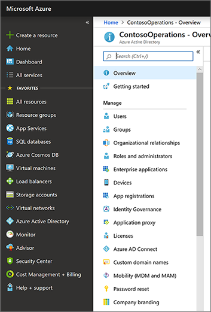
Stellen Sie sicher, dass Sie mit der Azure AD-Instanz arbeiten, die von Supply Chain Management verwendet wird.
Wählen Sie in der Liste Verwalten die Option App-Registrierungen aus.
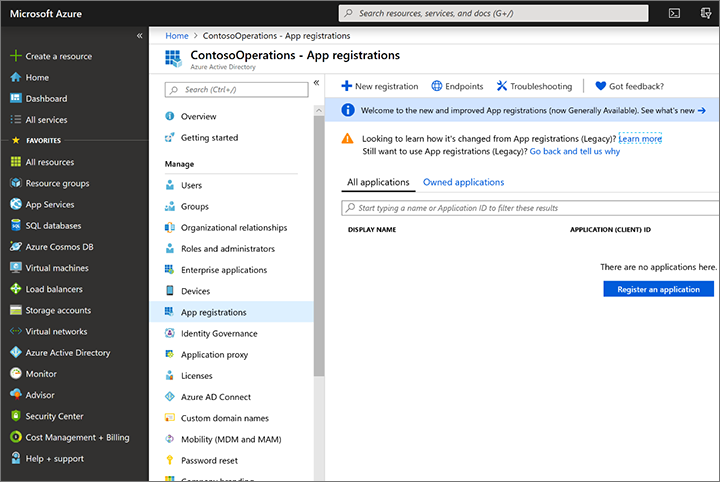
Wählen Sie auf der Symbolleiste Neue Registrierung aus, um den Assistenten Anwendung registrieren zu öffnen.
Geben Sie einen Namen für die Anwendung ein, wählen Sie die Option Nur Konten in diesem organisatorischen Verzeichnis und dann Registrieren aus.
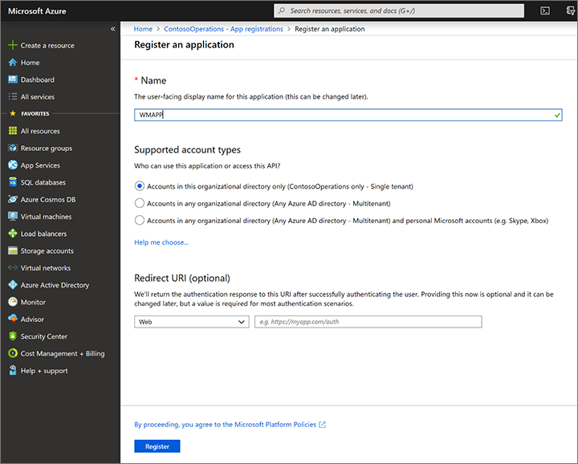
Die neue App-Registrierung wird geöffnet. Notieren Sie sich den Wert der Anwendungs(Client)-ID, da Sie ihn zu einem späteren Zeitpunkt benötigen. Dies ID wird später in diesem Thema als Client-ID bezeichnet.
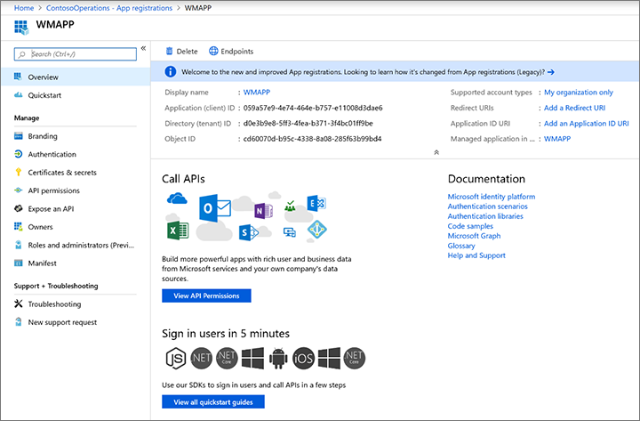
Wählen Sie in der Liste Verwalten Zertifikat und geheime Schlüssel aus. Wählen Sie dann eine der folgenden Schaltflächen aus, je nachdem, wie Sie die App für die Authentifizierung konfigurieren möchten. (Weitere Informationen finden Sie im Abschnitt Mit einem Zertifikat oder geheimen Clientschlüssel authentifizieren weiter unten in diesem Thema.)
- Zertifikat hochladen – Laden Sie ein Zertifikat hoch, um es als geheimen Schlüssel zu verwenden. Wir empfehlen diese Methode, da sie sicherer ist und außerdem vollständig automatisiert werden kann. Wenn Sie die Warehouse-App auf Windows-Geräten ausführen, notieren Sie sich den Fingerabdruck-Wert, der nach dem Hochladen des Zertifikats angezeigt wird. Sie benötigen diesen Wert, wenn Sie das Zertifikat auf Windows-Geräten konfigurieren.
- Neuer geheimer Clientschlüssel – Erstellen Sie einen Schlüssel, indem Sie eine Schlüsselbeschreibung und eine Dauer im Abschnitt Passwörter eingeben, und wählen Sie dann Hinzufügen aus. Erstellen Sie eine Kopie des Schlüssels, und bewahren Sie ihn sicher auf.
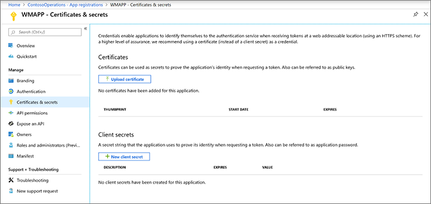
Weitere Informationen zum Einrichten von Webdienstanwendungen in Azure AD finden Sie in den folgenden Ressourcen:
Anweisungen zum Einrichten von Webdienstanwendungen mit Windows PowerShell in Azure AD finden Sie unter Vorgehensweise: Azure PowerShell zum Erstellen eines Dienstprinzipals mit einem Zertifikat verwenden.
Ausführliche Informationen zum manuellen Erstellen einer Webdienstanwendung in Azure AD finden Sie in den folgenden Themen:
Erstellen und Konfigurieren eines Benutzerkontos in Supply Chain Management
Führen Sie die folgenden Schritte aus, um Supply Chain Management die Verwendung Ihrer Azure AD-Anwendung zu ermöglichen.
Erstellen Sie einen Benutzer, der den Benutzeranmeldeinformationen für die Warehouse-App entspricht:
- Wechseln Sie in Supply Chain Management zu Systemverwaltung > Benutzer > Benutzer.
- Erstellen Sie einen Benutzer.
- Weisen Sie den Benutzer des mobilen Geräts für Lagerhaltung zu.
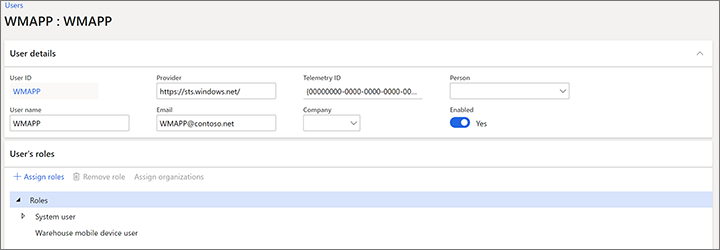
Ordnen Sie Ihre Azure AD-Anwendung dem Benutzer der Warehouse-App zu:
- Gehen Sie zu Systemadministration > Einrichtung > Azure Active Directory-Anwendungen.
- Erstellen Sie eine Position.
- Geben Sie die Client-ID ein, die Sie sich im vorherigen Abschnitt notiert haben, geben Sie ihr einen Namen, und wählen Sie den Benutzer aus, den Sie gerade erstellt haben. Wir empfehlen, dass Sie alle Ihre Geräte markieren. Wenn sie dann verloren gehen, können Sie deren Zugriff auf Supply Chain Management einfach von dieser Seite entfernen.
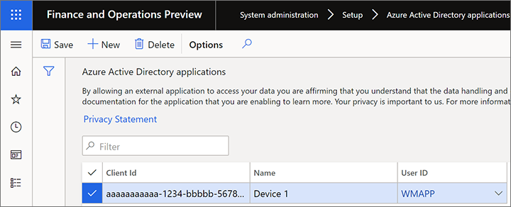
Sich mit einem Zertifikat oder einem geheimen Clientschlüssel authentifizieren
Die Authentifizierung mit Azure AD bietet eine sichere Möglichkeit, ein mobiles Gerät mit Supply Chain Management zu verbinden. Sie können sich mit einem Zertifikat oder einem geheimen Clientschlüssel authentifizieren. Wenn Sie Verbindungseinstellungen importieren, empfiehlt es sich, anstelle eines geheimen Clientschlüssels ein Zertifikat zu verwenden. Da der geheime Clientschlüssel immer sicher gespeichert werden muss, können Sie ihn nicht aus einer Verbindungseinstellungsdatei oder einem QR-Code importieren, wie später in diesem Thema beschrieben.
Zertifikate können als geheime Schlüssel verwendet werden, um die Identität der Anwendung zu belegen, wenn ein Token angefordert wird. Der öffentliche Teil des Zertifikats wird in die App-Registrierung im Azure-Portal hochgeladen, während das vollständige Zertifikat auf jedem Gerät bereitgestellt werden muss, auf dem die Warehouse-App installiert ist. Ihre Organisation ist für die Verwaltung des Zertifikats in Bezug auf Rotation usw. verantwortlich. Sie können selbstsignierte Zertifikate verwenden, Sie sollten jedoch stets nicht exportierbare Zertifikate verwenden.
Sie müssen das Zertifikat lokal auf jedem Gerät verfügbar machen, auf dem Sie die Warehouse-App ausführen. Weitere Informationen dazu, wie Sie bei Verwendung von Intune, Intune-gesteuerte Geräte verwalten, finden Sie unter Zertifikate zur Authentifizierung in Microsoft Intune verwenden.
Die Anwendung durch Importieren der Verbindungseinstellungen konfigurieren
Sie können die Verbindungseinstellungen importieren, anstatt sie manuell auf jedem Gerät einzugeben, um die Wartung und Bereitstellung der Anwendung auf vielen mobilen Geräten zu vereinfachen. In diesem Abschnitt wird erläutert, wie Sie die Einstellungen erstellen und importieren.
Eine Verbindungseinstellungsdatei oder einen QR-Code erstellen
Sie können Verbindungseinstellungen aus einer Datei oder einem QR-Code importieren. Für beide Methoden müssen Sie zuerst eine Einstellungsdatei erstellen, die das JSON-Format (JavaScript Object Notation) und die -Syntax verwendet. Die Datei muss eine Verbindungsliste mit den einzelnen Verbindungen enthalten, die hinzugefügt werden müssen. In der folgenden Tabelle sind die Parameter zusammengefasst, die Sie in der Verbindungseinstellungsdatei angeben müssen.
| Parameter | Beschreibung |
|---|---|
| ConnectionName | Geben Sie den Namen der Verbindungseinstellung an. Der Text kann maximal 20 Zeichen umfassen. Da dieser Wert die eindeutige Kennung für eine Verbindungseinstellung ist, müssen Sie sicherstellen, dass er in der Liste eindeutig ist. Wenn auf dem Gerät bereits eine Verbindung mit demselben Namen vorhanden ist, wird diese durch die Einstellungen aus der importierten Datei überschrieben. |
| ActiveDirectoryClientAppId | Geben Sie die Client-ID an, die Sie sich beim Einrichten von Azure AD im Abschnitt Webdienstanwendung in Azure Active Directory erstellen notiert haben. |
| ActiveDirectoryResource | Geben Sie die Stamm-URL von Supply Chain Management an. |
| ActiveDirectoryTenant | Geben Sie den Azure AD-Mandant an, den Sie mit dem Supply Chain Management-Server verwenden. Dieser Wert hat die Form https://login.windows.net/<your-Azure-AD-tenant-ID>. Hier ist ein Beispiel: https://login.windows.net/contosooperations.onmicrosoft.com. |
| Firma | Geben Sie die juristische Person in Supply Chain Management an, mit der die Anwendung eine Verbindung herstellen soll. |
| ConnectionType | (Optional) Geben Sie an, ob für die Verbindungseinstellung ein Zertifikat oder ein geheimer Clientschlüssel verwendet werden soll, um eine Verbindung mit einer Umgebung herzustellen. Gültige Werte sind "certificate" und "clientsecret". Der Standardwert ist "certificate". Hinweis: Geheime Clientschlüssel können nicht importiert werden. |
| IsEditable | (Optional) Geben Sie an, ob die Bearbeitung der Verbindungseinstellung für den Benutzer möglich sein soll. Gültige Werte sind "Wahr" und "Falsch". Der Standardwert ist "Wahr". |
| IsDefault | (Optional) Geben Sie an, ob es sich bei der Verbindung um die Standardverbindung handelt. Eine Verbindung, die als Standardverbindung festgelegt ist, wird beim Öffnen der App automatisch vorausgewählt. Es kann nur eine Verbindung als Standardverbindung festgelegt werden. Gültige Werte sind "Wahr" und "Falsch". Der Standardwert ist "Falsch". |
| CertificateThumbprint | (Optional) Bei Windows-Geräten können Sie den Zertifikatfingerabdruck für die Verbindung angeben. Bei Android-Geräten muss der App-Benutzer das Zertifikat auswählen, wenn eine Verbindung zum ersten Mal verwendet wird. |
Das folgende Beispiel zeigt eine gültige Verbindungseinstellungsdatei, die zwei Verbindungen enthält. Wie Sie sehen, ist die Verbindungsliste (mit dem Namen "ConnectionList" in der Datei) ein Objekt mit einem Array, in dem jede Verbindung als Objekt gespeichert ist. Jedes Objekt muss in geschweifte Klammern ({}) eingeschlossen und durch Kommas getrennt und das Array muss in Klammern ([]) eingeschlossen werden.
{
"ConnectionList": [
{
"ActiveDirectoryClientAppId":"aaaaaaaa-bbbb-ccccc-dddd-eeeeeeeeeeee",
"ConnectionName": "Connection1",
"ActiveDirectoryResource": "https://yourenvironment.cloudax.dynamics.com",
"ActiveDirectoryTenant": "https://login.windows.net/contosooperations.onmicrosoft.com",
"Company": "USMF",
"IsEditable": false,
"IsDefaultConnection": true,
"CertificateThumbprint": "aaaabbbbcccccdddddeeeeefffffggggghhhhiiiii",
"ConnectionType": "certificate"
},
{
"ActiveDirectoryClientAppId":"aaaaaaaa-bbbb-ccccc-dddd-eeeeeeeeeeee",
"ConnectionName": "Connection2",
"ActiveDirectoryResource": "https://yourenvironment2.cloudax.dynamics.com",
"ActiveDirectoryTenant": "https://login.windows.net/contosooperations.onmicrosoft.com",
"Company": "USMF",
"IsEditable": true,
"IsDefaultConnection": false,
"ConnectionType": "clientsecret"
}
]
}
Sie können die Informationen entweder als JSON-Datei speichern oder einen QR-Code mit demselben Inhalt generieren. Wenn Sie die Informationen als Datei speichern, empfehlen wir, sie unter dem Standardnamen zu speichern. connections.json. Dies gilt insbesondere dann, wenn Sie es auf jedem mobilen Gerät am Standardspeicherort speichern.
Verbindungseinstellungsdatei auf jedem Gerät speichern
In der Regel verwenden Sie ein Geräteverwaltungstool oder -skript, um die Verbindungseinstellungsdateien auf jedes von Ihnen verwaltete Gerät zu verteilen. Wenn Sie beim Speichern der Verbindungseinstellungsdatei auf jedem Gerät den Standardnamen und den Standardspeicherort verwenden, wird diese von der Warehouse-App automatisch importiert, auch während der ersten Ausführung nach der Installation der App. Wenn Sie einen benutzerdefinierten Namen oder Speicherort für die Datei verwenden, muss der App-Benutzer die Werte bei der ersten Ausführung angeben. Die App verwendet jedoch auch danach weiterhin den angegebenen Namen und Speicherort.
Bei jedem Start der App werden die Verbindungseinstellungen aus ihrem vorherigen Speicherort erneut importiert, um zu ermitteln, ob Änderungen vorgenommen wurden. Die App aktualisiert nur Verbindungen, deren Namen mit denen der Verbindungen in der Verbindungseinstellungsdatei identisch sind. Vom Benutzer erstellte Verbindungen, die andere Namen verwenden, werden nicht aktualisiert.
Sie können eine Verbindung nicht mithilfe der Verbindungseinstellungsdatei entfernen.
Wie bereits erwähnt, lautet der Standarddateiname connections.json. Der Standardspeicherort für Dateien hängt davon ab, ob Sie ein Windows- oder ein Android-Gerät verwenden:
- Windows:
C:\Users\<User>\AppData\Local\Packages\Microsoft.Dynamics365forOperations-Warehousing_8wekyb3d8bbwe\LocalState - Android:
Android\data\com.Microsoft.Dynamics365forOperationsWarehousing\files
Normalerweise werden die Pfade nach dem ersten Ausführen der App automatisch erstellt. Sie können sie jedoch manuell erstellen, wenn Sie die Verbindungseinstellungsdatei vor der Installation auf das Gerät übertragen müssen.
Note
Wenn die App deinstalliert wird, werden der Standardpfad und sein Inhalt entfernt.
Verbindungseinstellungen importieren
Führen Sie die folgenden Schritte aus, um die Verbindungseinstellungen aus einer Datei oder einem QR-Code zu importieren.
Öffnen Sie die Warehouse-App auf Ihrem mobilen Gerät.
Wechseln Sie zu Verbindungseinstellungen.
Legen Sie die Option Demomodus verwenden auf Nein fest.
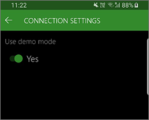
Wählen Sie je nachdem, wie Sie die Einstellungen importieren möchten, Datei auswählen oder QR-Code scannen aus:
- Wenn Sie die Verbindungseinstellungen aus einer Datei importieren, hat die App die Datei möglicherweise bereits gefunden, wenn beim Speichern der Standardname und der Standardspeicherort verwendet wurden. Wählen Sie andernfalls Datei auswählen aus, navigieren Sie zu der Datei auf Ihrem lokalen Gerät, und wählen Sie sie aus. Wenn Sie einen benutzerdefinierten Speicherort auswählen, speichert die App diesen und verwendet ihn beim nächsten Mal automatisch.
- Wenn Sie die Verbindungseinstellungen durch Scannen eines QR-Codes importieren, wählen Sie QR-Code scannen aus. Die App fordert Sie auf, die Verwendung der Kamera des Geräts zu erlauben. Nachdem Sie die Erlaubnis erteilt haben, wird die Kamera gestartet, damit Sie sie zum Scannen verwenden können. Je nach Qualität der Kamera des Geräts und Komplexität des QR-Codes kann es schwierig sein, einen korrekten Scan zu erhalten. Versuchen Sie in diesem Fall, die Komplexität des QR-Codes zu verringern, indem Sie nur eine Verbindung pro QR-Code generieren. (Derzeit können Sie nur die Kamera des Geräts zum Scannen des QR-Codes verwenden.)
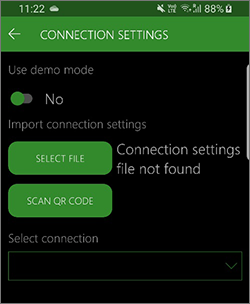
Wenn die Verbindungseinstellungen erfolgreich geladen wurden, wählen Sie in der oberen linken Ecke der Seite die Schaltfläche Zurück (linker Pfeil).
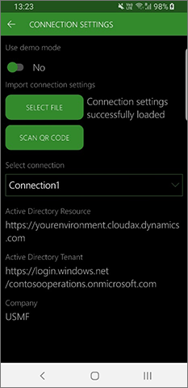
Wenn Sie ein Android-Gerät und ein Zertifikat zur Authentifizierung verwenden, fordert das Gerät Sie auf, das Zertifikat auszuwählen.
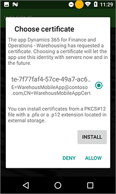
Die App stellt eine Verbindung zu Ihrem Supply Chain Management-Server her und zeigt die Anmeldeseite an.
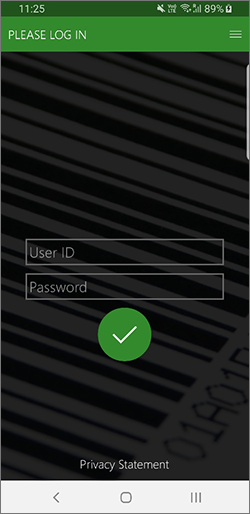
Anwendung manuell konfigurieren
Sie können die App manuell auf dem Gerät konfigurieren, sodass sie eine Verbindung mit dem Supply Chain Management-Server über die Azure AD-Anwendung herstellt.
Öffnen Sie die Warehouse-App auf Ihrem mobilen Gerät.
Wechseln Sie zu Verbindungseinstellungen.
Legen Sie die Option Demomodus verwenden auf Nein fest.
Tippen Sie auf das Feld Verbindung auswählen, um die Einstellungen zu erweitern, die zur manuellen Eingabe der Verbindungsdetails erforderlich sind.
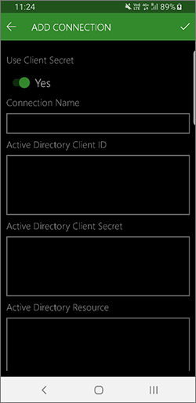
Geben Sie die folgenden Informationen ein:
Geheimen Clientschlüssel verwenden – Legen Sie die Option auf Ja fest, um einen geheimen Clientschlüssel für die Authentifizierung mit Supply Chain Management zu verwenden. Legen Sie sie auf Nein fest, um ein Zertifikat für die Authentifizierung zu verwenden. (Weitere Informationen finden Sie unter Webdienstanwendung in Azure Active Directory erstellen.)
Verbindungsname – Geben Sie einen Namen für die neue Verbindung ein. Dieser Name wird beim nächsten Öffnen der Verbindungseinstellungen im Feld Verbindung auswählen angezeigt. Der eingegebene Name muss eindeutig sein. (Das bedeutet, dass er sich von allen anderen auf Ihrem Gerät gespeicherten Verbindungsnamen unterscheiden muss, wenn dort andere Verbindungsnamen gespeichert sind.)
Active Directory-Client-ID – Geben Sie die Client-ID ein, die Sie sich beim Einrichten von Azure AD im Abschnitt Webdienstanwendung in Azure Active Directory erstellen notiert haben.
Geheimer Active Directory-Clientschlüssel – Dieses Feld ist nur verfügbar, wenn die Option Geheimen Clientschlüssel verwenden auf Ja gesetzt ist. Geben Sie den geheimen Clientschlüssel ein, den Sie sich beim Einrichten von Azure AD im Abschnitt Webdienstanwendung in Azure Active Directory erstellen notiert haben.
Active Directory-Zertifikatfingerabdruck – Dieses Feld ist nur dann für Windows-Geräte verfügbar, wenn die Option Geheimen Clientschlüssel verwenden auf Nein gesetzt ist. Geben Sie den Zertifikatfingerabdruck ein, den Sie sich beim Einrichten von Azure AD im Abschnitt Webdienstanwendung in Azure Active Directory erstellen notiert haben.
Active Directory-Ressource – Geben Sie die Stamm-URL von Supply Chain Management an.
Note
Beenden Sie diesen Wert nicht mit einem Schrägstrich (/).
Active Directory-Mandant – Geben Sie den Azure AD-Mandant ein, den Sie mit dem Supply Chain Management-Server verwenden. Dieser Wert hat die Form
https://login.windows.net/<your-Azure-AD-tenant-ID>. Hier ist ein Beispiel:https://login.windows.net/contosooperations.onmicrosoft.com.Note
Beenden Sie diesen Wert nicht mit einem Schrägstrich (/).
Unternehmen – Geben Sie die juristische Person in Supply Chain Management ein, mit der Sie die Anwendung verbinden möchten.
Wählen Sie in der rechten oberen Ecke der Seite die Schltfläche Speichern aus.
Wenn Sie ein Android-Gerät und ein Zertifikat zur Authentifizierung verwenden, fordert das Gerät Sie auf, das Zertifikat auszuwählen.
Die App stellt eine Verbindung zu Ihrem Supply Chain Management-Server her und zeigt die Anmeldeseite an.
Aufheben des Zugriffs für ein Gerät
Bei einem verloren gegangenen oder beeinträchtigten Gerät müssen Sie den Zugriff des Geräts auf Supply Chain Management entfernen. Anhand der folgenden Schritten wird beschrieben, wie der Zugriff entfernt wird.
Gehen Sie zu Systemadministration > Einrichtung > Azure Active Directory-Anwendungen.
Löschen Sie die Position, die dem Gerät entspricht, dessen Zugriff Sie entfernen möchten. Notieren Sie sich die Client-ID, die für das entfernte Gerät verwendet wird, da Sie diese später benötigen.
Wenn Sie nur eine Client-ID registriert haben und mehrere Geräte dieselbe Client-ID verwenden, müssen Sie neue Verbindungseinstellungen für diese Geräte vornehmen. Andernfalls verlieren Sie den Zugriff.
Melden Sie sich beim Azure-Portal unter https://portal.azure.com an.
Wählen Sie im linken Navigationsbereich Active Directory, und stellen Sie sicher, dass Sie sich im richtigen Verzeichnis befinden.
Wählen Sie in der Liste Verwalten die Option App-Registrierungen und anschließend die Anwendung aus, die Sie konfigurieren möchten. Die Seite Einstellungen wird mit den entsprechenden Konfigurationsinformationen angezeigt.
Stellen Sie sicher, dass die Client-ID der Anwendung mit der Client-ID übereinstimmt, die Sie sich in Schritt 2 notiert haben.
Wählen Sie auf der Symbolleiste Löschen aus.
Wählen Sie in der angezeigten Bestätigungsmeldung Ja aus.